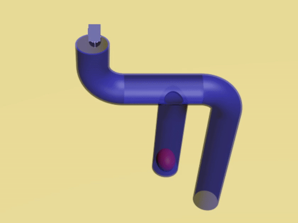

LivingWaters
Helping out the rutgers hult prize team
As part of the annual Hult prize competition, the Rutgers Team came up with the idea of LivingWaters, a way of harvesting rainwater to more efficiently gather water in places of need. I was given the opportunity to design their model in CAD and perform water simulations on their model in Autodesk 3ds Max.
Iteration #1

This is the first iteration of their design. Using standard tents, the modular system composes of brackets, tarp, mesh, and a central tube to filter rainwater down into a bottom container.
Iteration #2
The team was able to make it past the qualifiers and become one of the top 15 teams in the world (that is crazy to me)! For their second design that I was able to model, there is now an additional tarp on the other side, which allows for more efficient collection.
Learning Autodesk 3ds Max
In order to better simulate their model, they also wanted me to see if I could do some water simulations on the CAD model I designed. After doing some research, I decided that learning some fluid simulation in Autodesk 3ds Max was the way to go.
After importing the STL files into 3ds Max, water sources were generated. The program was then able to simulate how water would interact with the model.

Fluid Analysis

Rendering with interaction from particles
Once the fluid analysis was complete, it could be rendered into a more aesthetically pleasing model by editing fluid properties such that it looked like water.

Isometric view of the system
An additional simulation they wanted to show was their flush diverter design, which would remove unclean water initially and allow cleaner water to pass through.
Performance and Thanks
The LivingWaters team is continuing their social venture outside of the competition and I am happy to say I had a small part in helping them towards that. I got to experience using Autodesk 3ds Max for the first time and was able to meet some very driven people. LivingWaters was recently named one of the top 50 companies for refugees by the Vatican's official program for promoting social-impact companies, which is an incredible achievement. I wish them luck in their future ventures. Hopefully they get famous and I can brag about them one day.